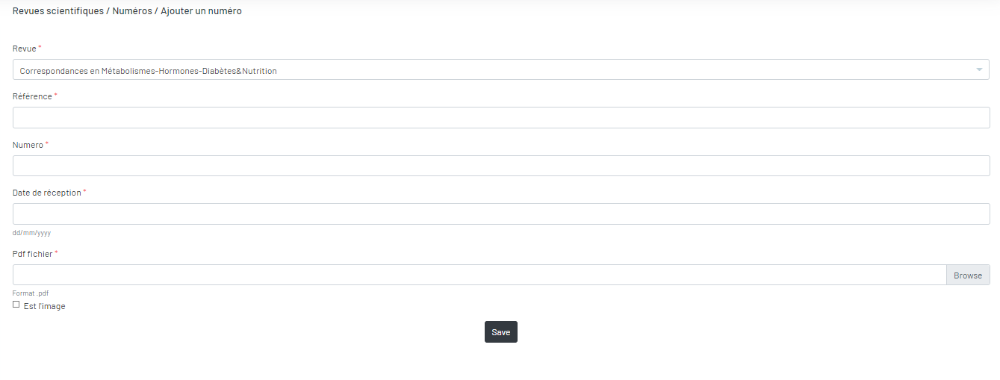
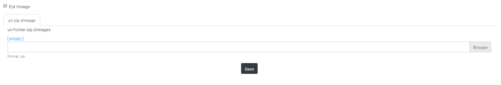

Ajouter un numero
Vous devez renseigner la revue avec la référence du numéro, le numéro et la date de réception du numéro, et un fichier au format PDF ou des images.

Si ce sont des images, il faut les compresser dans un seul dossier ZIP et cocher « Est image » pour afficher un autre champ.

Après l’envoi, le numéro va être transformé en images et extraire les mots-clés via l’api Google OCR dans ce numéro.